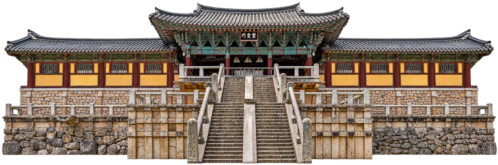
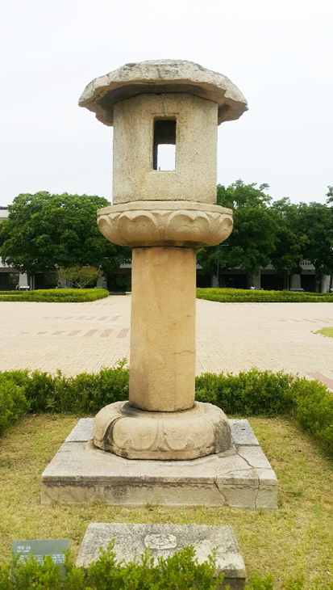
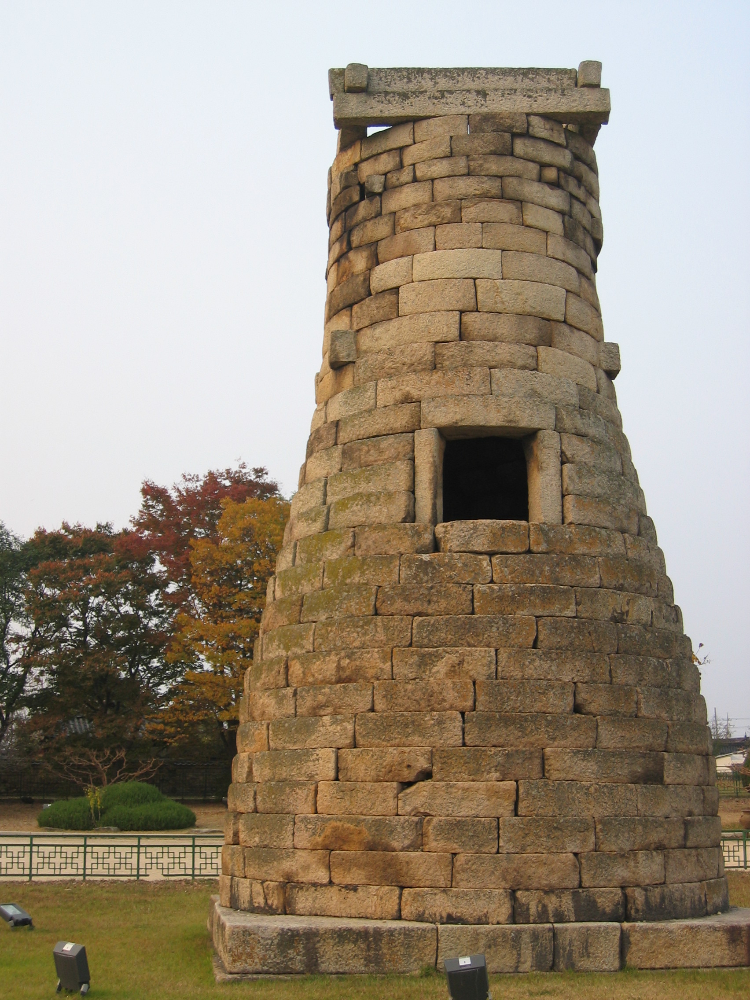
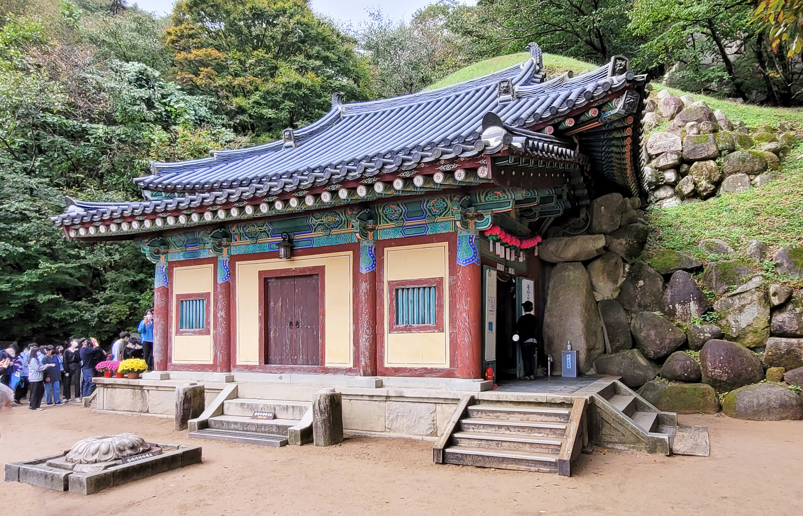
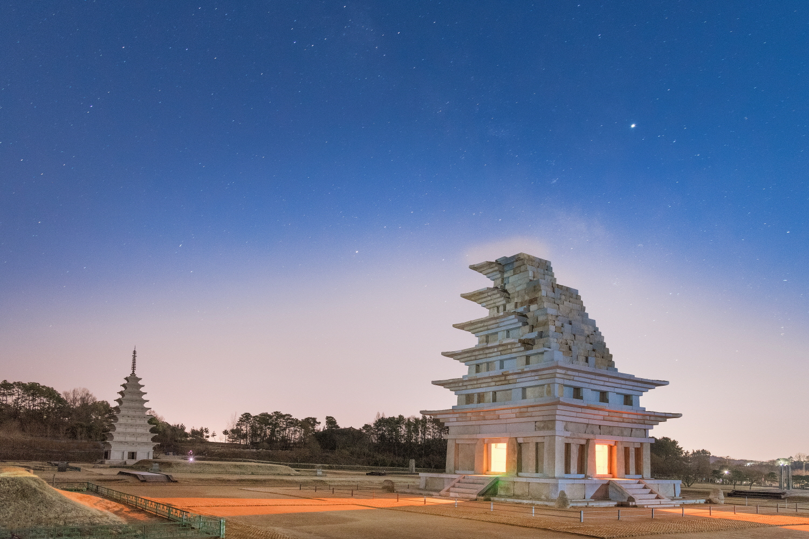
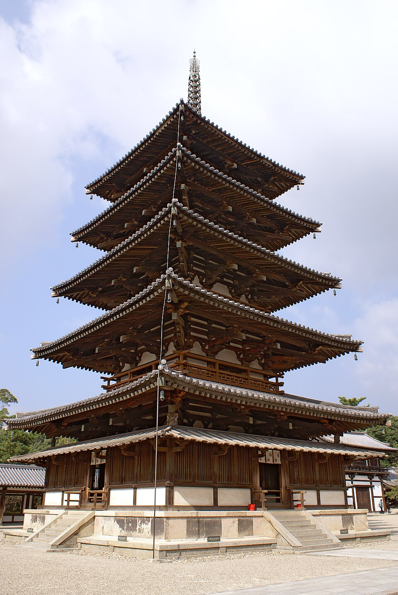
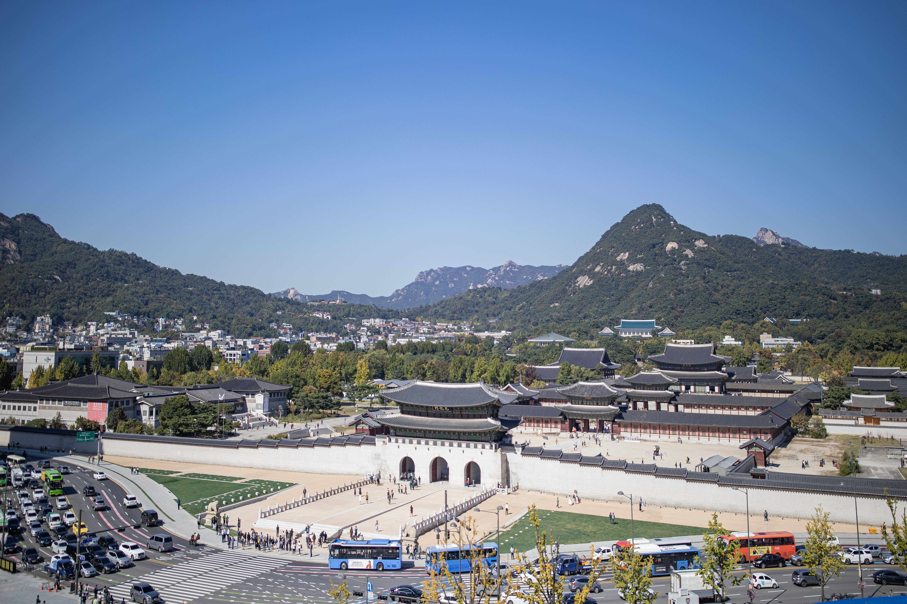

사용 흐름01 / 04
주변 유적을 고릅니다
현재 위치 주변의 유적을 사진과 거리로 확인합니다. 이름을 알고 있다면 검색해서 찾을 수도 있습니다.
사찰·왕릉·궁 같은 분류로 범위를 좁히고, 가까운 장소의 사진을 보며 방문할 곳을 고릅니다. 마음에 드는 유적을 누르면 그곳의 소개와 문화재를 확인할 수 있습니다.
한자와 전문 용어로 가득한 안내판을 사진 한 장으로 판독하고, 외국인에게는 자국 문화에 빗대어 설명하는 다국어 문화유산 도슨트 앱.

유적 안내판에는 한자와 익숙하지 않은 용어가 많습니다. 원문과 번역만으로 이해하기 어려운 내용을 사진 인식과 쉬운 설명으로 보완했습니다.

八角 石燈으로 下臺石에 伏蓮, 上臺石에 仰蓮을 새겼으며 統一新羅 石燈의 典型을 보여준다.
한글과 한자를 읽더라도 하대석·복련·앙련 같은 용어는 별도로 찾아봐야 합니다. 안내판을 읽은 뒤에도 석등의 구조와 특징을 이해하기 어렵습니다.
전문 용어 6개 · 한자 표기 그대로목업의 터치 표시를 따라 화면이 바뀝니다. 주변 탐색부터 기록 확인까지 살펴보세요.


‹↥익숙한 종교 건축의 예배 공간을 떠올려 보세요. 석굴암의 내부 공간과 불상이 어떻게 배치되어 있는지 차례로 살펴볼 수 있습니다.
현재 위치 주변의 유적을 사진과 거리로 확인합니다. 이름을 알고 있다면 검색해서 찾을 수도 있습니다.
사찰·왕릉·궁 같은 분류로 범위를 좁히고, 가까운 장소의 사진을 보며 방문할 곳을 고릅니다. 마음에 드는 유적을 누르면 그곳의 소개와 문화재를 확인할 수 있습니다.
안내판을 찍거나 갤러리에서 사진을 고릅니다. 읽어 낸 글과 해당 유적을 한 화면에서 확인합니다.
사진을 고른 뒤 분석하기를 누르면 안내판의 글을 읽고, 그 내용과 맞는 유적을 찾습니다. 판독 결과와 연결된 유적을 확인한 다음 상세 설명으로 넘어갑니다.
문화재의 기본 설명 아래에서 내 문화에 빗댄 설명을 읽습니다. 더 궁금한 내용은 바로 질문할 수 있습니다.
낯선 용어는 익숙한 문화재에 빗대어 읽고, 사진과 함께 구조나 쓰임을 살펴볼 수 있습니다. 설명을 읽다가 궁금한 부분이 생기면 해당 문화재에 대해 질문을 이어갑니다.
컬렉션에서 방문한 유적을 찾아 설명을 다시 봅니다. 공유 카드도 이곳에서 확인합니다.
유적의 이름과 사진을 보고 지난 답사에서 살펴본 장소를 찾습니다. 목록의 항목을 누르면 해당 장소의 설명을 다시 읽을 수 있어, 현장에서 놓친 내용도 나중에 확인할 수 있습니다.
촬영한 안내판에서 유적을 찾고,
설명을 확인한 뒤 방문 기록을 남깁니다.
사진을 넘겨 유적별 판독 예시와 일치도를 확인해 보세요.
사진을 좌우로 넘겨 보세요.
일본인 관람객 예시


미륵사지 석탑을 처음 보는 일본인 관람객에게는 호류지 오층목탑을 떠올리며 설명합니다. 호류지는 나무로 지은 탑이고 미륵사지 석탑은 돌로 만든 탑이지만, 목조건축의 형태를 기준으로 보면 낯선 석탑의 요소를 이해하기 쉽습니다.
호류지 목탑에서 층층이 이어지는 지붕선을 먼저 살펴보세요. 미륵사지 석탑에서도 각 층을 덮고 밖으로 뻗은 지붕돌, 즉 옥개석을 볼 수 있습니다. 그 끝부분의 부드러운 곡선에는 목조건물의 지붕을 돌로 옮겨 표현한 특징이 남아 있습니다. 두 사진의 지붕 점을 선택하면 이 부분을 가까이 비교할 수 있습니다.
호류지의 아래층에서는 나무 기둥이 건물을 받치는 모습을 볼 수 있습니다. 미륵사지 석탑의 1층에도 기둥 모양으로 세운 돌 부재와 그 위를 가로로 연결하는 형태가 남아 있습니다. 모서리 기둥에는 가운데가 불룩한 배흘림 표현도 있어, 돌로 쌓은 탑 안에서 목조건축의 흔적을 읽을 수 있습니다.
이 비교는 두 탑의 구조나 모습이 같다는 뜻이 아닙니다. 익숙한 자국 문화재를 출발점으로 삼아, 다른 재료로 만든 유적에서도 지붕과 기둥 같은 건축 요소를 발견하도록 돕는 해설입니다.
하단 탭의 유적 AI에서 유적과 경주 역사에 대해 대화로 묻습니다. 답사 중에 읽기 편하도록 답은 두세 문장으로 짧게 돌려주고, 앞선 대화를 기억해 이어서 질문할 수 있습니다.
Gemini 2.5 Flash · Firebase Functions
안녕하세요! 경주 유적 가이드예요. 유적지나 유적에 대해 무엇이든 물어보세요.
불국사는 어떤 곳이야?
불국사는 신라 경덕왕 때인 751년에 김대성이 짓기 시작한 사찰이에요. 경내에 석가탑과 다보탑이 나란히 서 있고, 1995년 석굴암과 함께 유네스코 세계유산에 올랐어요.
언어를 선택하면 장소 이름과 안내 문구가 함께 바뀝니다.

경복궁의 전각과 궁궐의 모습을 살펴보세요. 유적 이름과 안내를 한국어로 확인할 수 있습니다.
방문한 유적을 목록에서 다시 찾습니다. 항목을 누르면 유적 상세 화면으로 이어집니다.
방문 기록 예시
수원 화성은 정조 때인 1794년에 공사를 시작해 1796년에 완성한 성곽입니다. 돌과 벽돌을 함께 사용하고 거중기 등 기계를 활용해 축성했습니다. 장안문·팔달문을 비롯한 성문과 여러 방어 시설이 성벽을 따라 이어지며, 도시와 주변 지형을 함께 고려한 조선 후기 성곽의 모습을 보여줍니다.
문화유산의 분위기를 담은 갈색을 주요 버튼과 선택 상태에 사용했습니다. 사진으로 유적을 고르고, 내 언어로 설명을 읽고, 방문 기록을 남기는 흐름에 맞춰 화면을 구성했습니다.
오래된 목재와 흙을 떠올리게 해 유적의 분위기를 담는 갈색
석재와 흙의 따뜻한 질감을 더하는 모래색
유적 사진과 어우러지면서 긴 해설도 선명하게 읽히는 짙은 갈색
유적 주변의 나무와 풀을 닮아 방문 완료를 자연스럽게 표시하는 초록
안내판의 종이빛처럼 정보를 부드럽게 나누는 베이지
유적 사진의 색과 세부 모습을 그대로 드러내는 밝은 바탕
이름·지정·시대는 위에서 짧게 확인하고, 문화재에 대한 설명은 아래에서 읽게 했습니다. 낯선 용어가 많은 안내문을 한 덩어리로 보여주지 않도록 구성했습니다.
언어를 바꿀 때 이름과 설명의 기준 위치를 유지했습니다. 영문처럼 긴 표기는 별도 줄에 배치해 항목명과 겹치지 않게 했습니다.
안내판에서 읽은 정보, 찾아낸 유적, 자국 문화에 빗댄 설명을 각각 나눴습니다. 원문 정보와 AI가 덧붙인 해설을 혼동하지 않도록 설명의 출처를 표시했습니다.